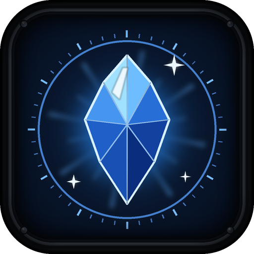

D2SkinChangerМенеджер модов: окно «Косметика» собрано на коде Dota 2 Mod Manager (GPL-3.0-or-later). Это изменённая версия, не оригинальное приложение. Изменено 20.10.2026: окно отделено от оригинала, у него своё хранилище состояния, метка патча и имя папки.
Dota хранит почти всё в сжатых форматах Source 2. Простую половину приложение читает само, а остальное разбирает эта программа. Без неё часть предметов останется без картинки.
48 МБ, качается один раз в папку приложения; файл проверяется по контрольной сумме. Удалить можно когда угодно в настройках, ничего сломано не будет.